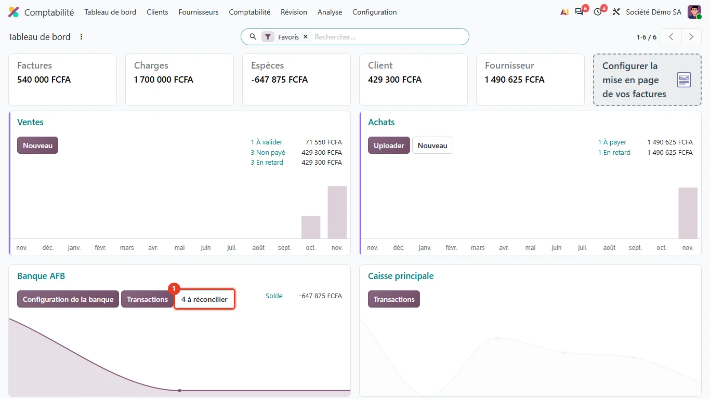

Importer un relevé bancaire et faire le rapprochement
Objectif. Charger le relevé de la banque dans Odoo et rapprocher chaque ligne d'une facture, d'un paiement ou d'un compte.
Menu Odoo 15Comptabilité > Tableau de bord (carte du journal de banque)
Étapes
- Sur la carte de la banque, utilisez Importer un relevé (fichier de la banque : CSV, OFX ou CAMT).
- Cliquez ensuite sur Rapprocher (1) : les lignes du relevé s'affichent.
- Pour chaque ligne, Odoo propose la facture ou le paiement correspondant : validez-le.
- Sinon, choisissez le partenaire ou le compte (frais bancaires, virement interne, retenue).
- Terminez quand toutes les lignes sont rapprochées : le solde d'Odoo égale celui du relevé.



À vérifier
- Le solde du journal dans Odoo égale le solde du relevé à la même date.
- Aucune ligne de relevé ne reste à rapprocher en fin de mois.
À éviter
- Ne saisissez pas à la main une opération déjà dans le relevé importé.
Exercice
Importez un relevé de 4 lignes et rapprochez-les toutes.